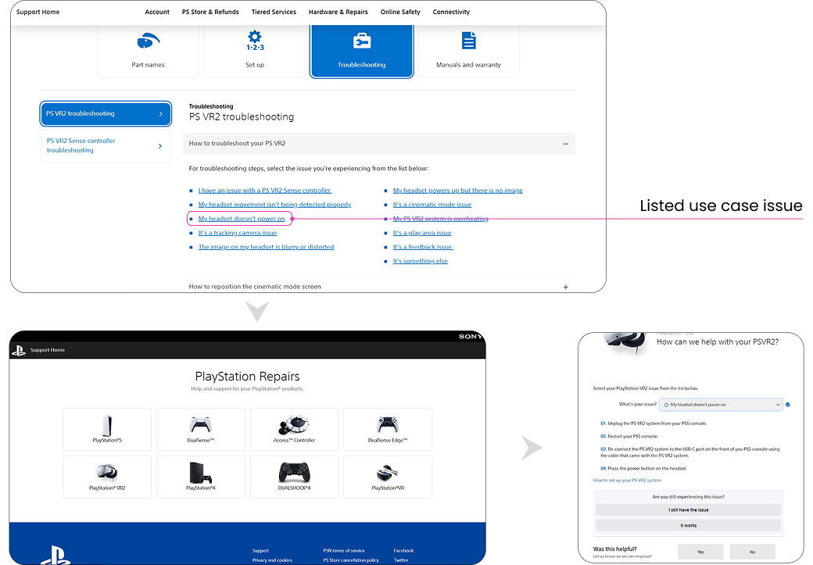

PlayStation VR2
Welcome to PlayStation VR2 — a content strategy case study aimed at improving the structure, clarity, and discoverability of content across the official PlayStation VR2 website. This project focuses on enhancing how users find and engage with content related to Sony's VR ecosystem.
The PlayStation VR2 website housed an extensive library of pages with rich content but faced challenges such as:
- Inconsistencies in content structure
- Redundant or outdated information
- Lack of clarity in key messaging
Our goal was to identify these gaps and craft strategies to enhance content effectiveness, ensuring consistency and alignment with PlayStation's brand identity.

Rethinking the PS VR2 Content Experience
A content strategy audit improving clarity, consistency, and engagement across the PlayStation VR2 website.
The Process
Three parallel workstreams — audit, analysis, and strategy — carried out across group and individual phases.
Content Audit
- Using a shared spreadsheet, we conducted a content audit of the web pages, focusing on key topics
- Evaluated existing content for quality and relevance
- Identified areas with redundant information
- Collaborated with Multiplicity to document issues online
Group Phase
Content Analysis
- Took the audit a step further in analyzing the content itself
- Reviewed the key issues for improvement by key audience segments
- Identified core content issues including redundant copy, broken TOCs, and inconsistent terminology
- Explored key areas for improvement in content hierarchy
Individual Phase
Strategy
- Based on the analysis, I created a content strategy focused on:
- Streamlining relevant information for key audiences at each stage
- Improving content hierarchy to guide users efficiently
- Replacing inline taxonomy to guide users through key user-friendly journeys
Individual Phase
Content Audit & Tone of Voice
A comprehensive audit of the PS VR2 website's content and communication style, highlighting key patterns, strengths, and opportunities to align tone of voice with user expectations and brand identity.


Findings
Finding 1
Visuals and content tones align well. The imagery, typography, and branding elements work seamlessly together to create an immersive and engaging experience.
Finding 2
Lack of consistent flow and repetitive content hinders the user experience. Users navigating to troubleshoot pages encounter a fragmented, non-linear journey.
Visuals and content tones align well.
A key strength of the PlayStation VR2 website is its well-articulated visual and content tone alignment. The imagery, typography, and branding elements work seamlessly together, creating a cohesive, immersive, and engaging experience.
In the case of PlayStation VR2, dynamic visuals and innovative elements complement the futuristic and immersive nature of the product. The content naturally emphasises excitement, innovation, and high-performance gaming — engaging the user without overwhelming them.
The strategy for better content and visuals enhances the overall user experience, making information accessible and creating a seamless, easy-to-follow browsing experience.
Lack of consistent flow and repetitive content hinders the user experience.
Use Case 1: An existing customer wants to troubleshoot issues with connecting their headset.
Current State Issue
Navigating from the PS VR2 homepage to the troubleshoot pages, the user gets an option to select from listed issues. Upon selecting a specific issue, users are redirected to the PlayStation Support Page, where they must navigate again through multiple tabs to find available solutions. This process lacks a consistent flow, creating a disjointed experience with no clear navigation paths — adding friction to the user journey.

Proposed Solution
- Direct Route to PS VR2 Support: Instead of redirecting users to the Parent Company's Support Page, the solution would ensure they can find specific support options — including support pages, video calling, and online chat — directly.
- Content-Based Navigation: The page would be more user-centred, offering specific support pages, links to relevant content, and real-time personalisation, providing a more effective and seamless experience.
These improvements would create a smoother, more efficient support experience by reducing friction and maintaining consistency throughout the navigation flow.
Use Case 2: An existing customer wants to troubleshoot issues that are not already listed.
Redundant Navigation and Lack of Content Differentiation
In cases where the issue is not listed on the PlayStation VR2 troubleshoot page, users have the option to select "Other" — which redirects them to a menu of the same troubleshooting options. Since the content of each category is indistinguishable, users are likely to navigate through unnecessary sections, resulting in time wasted and a diminished experience.
- Redundant User Journey: The page takes users continuously circling to similar steps while not offering new or relevant information
- Lack of Content Differentiation: Displaying the same details across all categories creates a false sense of content variety, reducing trust
- Flawed Dynamic Support: Users may need the support system to intelligently suggest options as they type


Proposed Solution
- Smart Search: Instead of directing users through unnecessary categories, offer a dynamic search bar that allows users to type and find the most relevant issues immediately
- Intelligent Taxonomy: Introduce intelligent content filtering to show only the most relevant content as users interact with each dropdown, ensuring the page is more useful and credible
Impact & Value
Strategic improvements to content structure, navigation flow, and user experience across the PlayStation VR2 website.
Identified critical content inconsistencies and redundancies across multiple sections of the PS VR2 website, providing a clear audit trail for improvements.
Proposed a streamlined support flow that reduces friction and keeps users within the PS VR2 ecosystem rather than redirecting them to the parent company.
Developed actionable content strategy recommendations to enhance effectiveness, consistency, and alignment with PlayStation's brand identity.